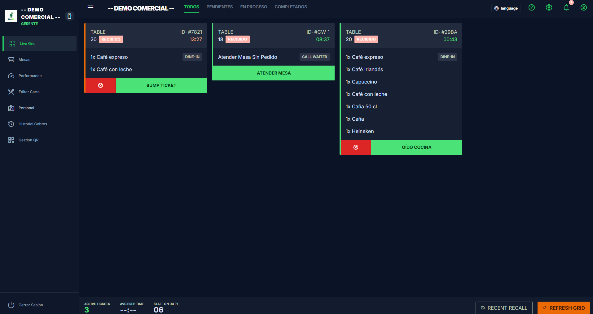
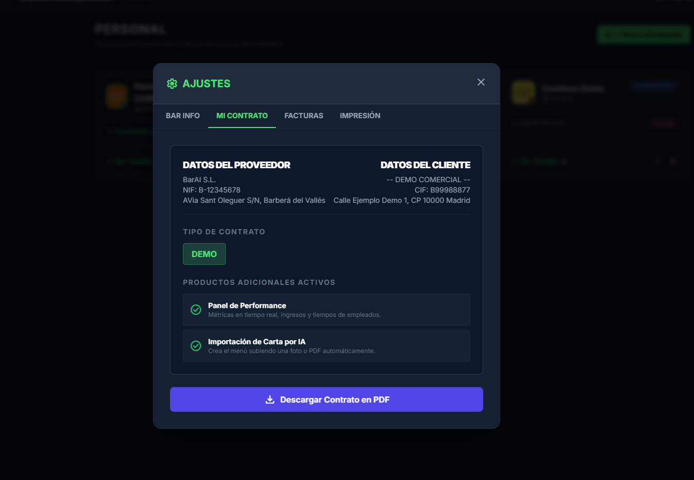
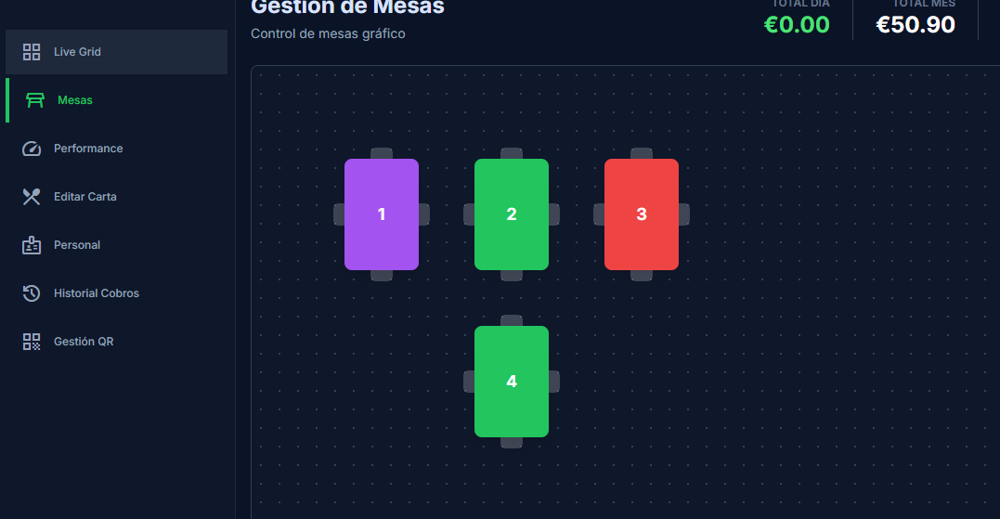

Help Center and Operational User Guide
Complete guide to BarAI's architecture and operations: table and bar orders, kitchen KDS, PIN security, tax collection with 10% VAT, digital receipt with logo, Google reviews.
1. Customer Access, Web Table and Validation
The diner accesses the instant Web App by scanning a physical QR code at the table or through the Web Table URL, with no downloads or mandatory registrations.
-
Web Table (/order/WEB): Special channel for bar or takeaway orders without physical code validation.
-
Modular Security Validation: The bar can activate validation via a 3-letter visual code (e.g.
M1A) or NFC proximity. -
Encrypted Session Opening: A secure unique identifier is assigned (
client_token) and the table turns to occupied status in real-time. -
Call Waiter: Direct silent alert to the dining room without generating an order or kitchen ticket.


2. Kitchen, KDS and Order Cycle
Real-time reception via WebSockets with acoustic alert in FIFO queue and clean state transitions for the team.
Received (Cyan): Newly arrived order. The customer can still cancel it from their mobile if they made a mistake.
Preparing (Orange): The cook presses "Heard Kitchen". Cancellation by the diner is immediately blocked.
Ready (Green): The dish is plated. The dining room is alerted for delivery to the table.
Completed / Served: Delivered to the table. This is the only state computable for final billing.
3. Cancellation Rules and 4-Digit Master PIN
To eradicate food waste and uncontrolled losses, BarAI implements a double security barrier:
The customer can only cancel their order while it remains in
Received status. As soon as the kitchen presses "Heard Kitchen", the
button disappears from their screen.
If a dish already in preparation must be canceled (e.g. out of stock or error), the system strictly requires the Manager's 4-digit PIN. The reason is recorded in the audit log.

4. Live Floor Plan and Table Charging Rules
Real-time visualization of each table's status and settlement with strict consumer protection:
-
Exclusive Charging Rule: By pressing "Charge Table",
the total adds up only the orders in
Completedstatus (served). - Orphaned Orders Cancellation: Any dish left in preparation is automatically canceled to ensure an unconsumed dish is never billed.
-
Official VAT Breakdown (10% Hospitality Spain): All
receipts calculate the Taxable Base (
Total / 1.10), 10% VAT Rate, and final Total in accordance with RD 1619/2012 regulations. - Table Release: The session is closed, the table turns back to green (Free) and the digital receipt and satisfaction survey are triggered.

5. Digital Receipt with Logo and Google Reviews (15 min)
Consolidated PDF Receipt with Logo
If the diner requests their receipt, the system queues the request. Upon charging the table,
a single consolidated official PDF is dispatched with the bar's
logo (with the Logo product) and full tax breakdown.
The logo uploaded by the Manager is stamped on the PDF, in the email body, in the review invitations, and on the printed POS pre-receipt.
Google Reviews Module (Anti-spam)
If the bar has the Reviews product active,
15 minutes after receiving the receipt, the customer receives an email
inviting them to rate the venue with 5 stars on Google Maps.
Strict Anti-spam Filter: If the diner already received this invitation during a previous visit to this bar, the database detects it and never sends it again.
6. Administration, AI Base Menu and Contracts
Base Menu & AI Parsing
Populate the catalog with over 30 references of beers (Estrella Damm, Moritz, Voll-Damm), DO wines and coffees with one click, or import physical menus using Artificial Intelligence (Gemini).
1-Click Modular Upselling
If the bar wishes to activate locked modules (Performance, Google Reviews, NFC Validation), there is a direct button to request activation from administration with pre-loaded details.
Inactivity Monitor (10m)
Continuous background auditing: if a table has been open for over 10 minutes without ordering anything, it is marked red on the floor plan so staff can go attend to it.
FAQs and Operational Rules
Click on any question to view the operational rule details.
cook role view has a strict filter that ignores dining room
service calls. Only waiters and administrators receive the alert to avoid distracting
stove production.
WHERE company_id = ? and WebSocket connections are subscribed to private rooms
(company_<id>), ensuring absolute privacy between venues.
Do you need personalized technical assistance?
If you experience any operational incidents or wish to configure a new terminal, our support team is available.
Create Support Ticket